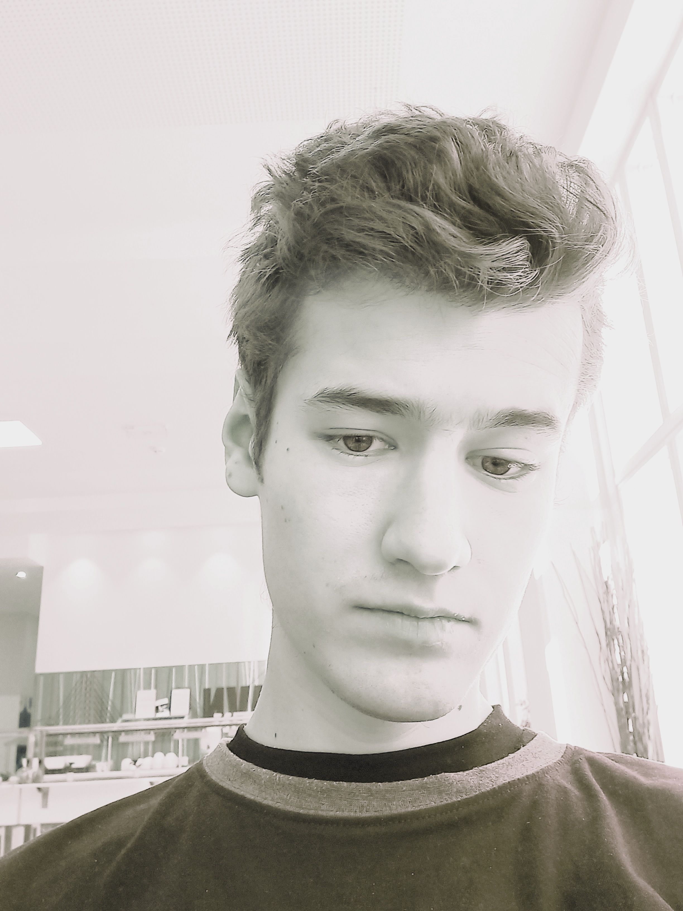
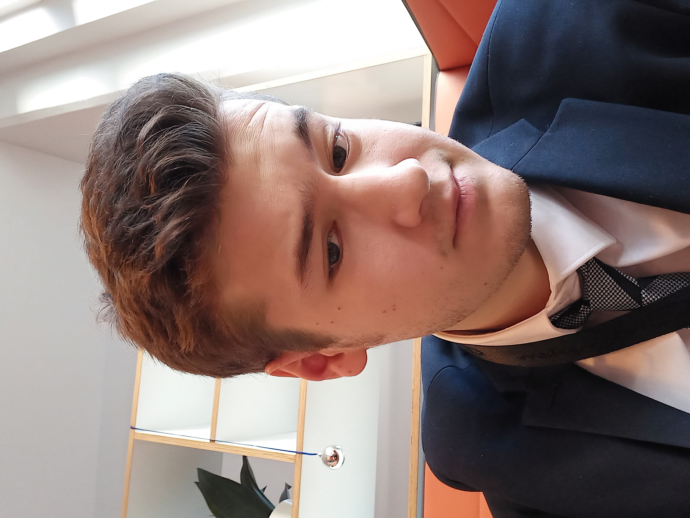
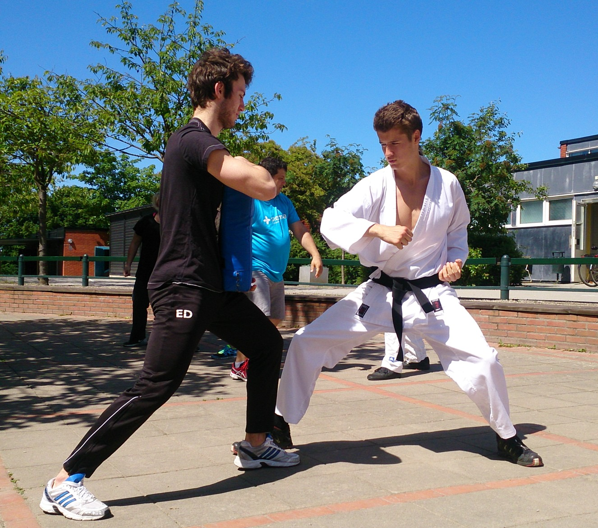

Home
This is the home section of Nong Feel's personal website.
About
Learn more about Mr. Filip Petrik, the visionary behind this site, and what makes this man unique.
I was born on 4 April 1996 in Malmö, Sweden.
Malmö and the neighbouring city of Lund are practically where I've grown up and spent my childhood and adulthood.
I was educated in Swedish elementary school and later in the Swedish high school of Cathedral School in Lund.
I am a former student at Lund University, where I studied Computer Science (programming and mathematics).
I am well-versed in university level mathematics.
Previously I worked as a substitute teacher throughout Skåne County and I shared my knowledge among the young students of Skåne.
I created this website to document my journey throughout life and to be visible in the digital world.
I love life and I am passionate living, loving, transforming my skillset into joy for others.
I have a 2 DAN black belt in Shotokan Karate and thus I am passionate about karate and other martial arts.
In my spare time I like reading, programming, cooking, hiking and travelling.
I have made a lot of travels in my days with my father, brother and mother.
The yearly summer visits to Slovakia were formative of my younger years.
My father brought us during childhood, to great destinations such as Italy, Austria,
Tenerife, Norway, Thailand, Barbados and France.
Last year I made a journey over the entire world in only 4 1/2 months.
My nickname in Thailand was Nong Feel (Nong is 'younger brother').
I travelled to Thailand, Japan and Vietnam and encountered a completely different world.
From Tokyo, Haneda Airport I left to Schiphol Amsterdam and then to Copenhagen.
I am going to be posting about my projects, like a blog/vlog of sorts.
Here I am! Welcome!



Projects
Explore the key projects and creations that showcase skills, creativity, and technical experience.
Portfolio: Three websites
Website 1: the current one (cue "this" in programming language ;) )
Website 2: Interpreter website
Website 3: Lund Karate Shotokan Website
Contact
Reach out for collaborations, questions, or any inquiry through the contact details below.
Here is a link to my Youtube.
My Facebook
My Soundcloud
Instagram: @f.pet1
Site Sections
Use these subsections to navigate the full site: